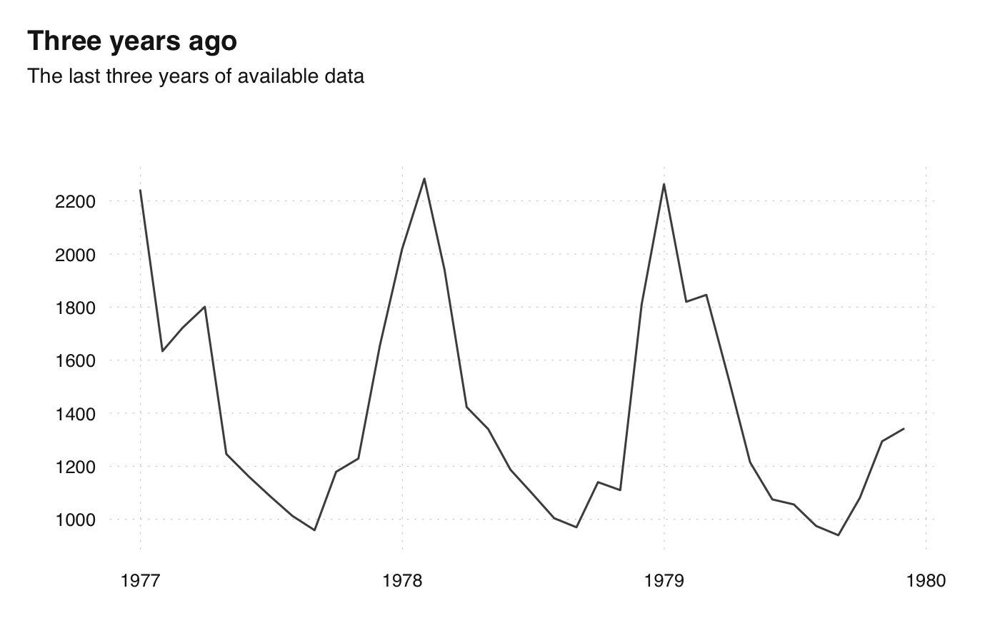
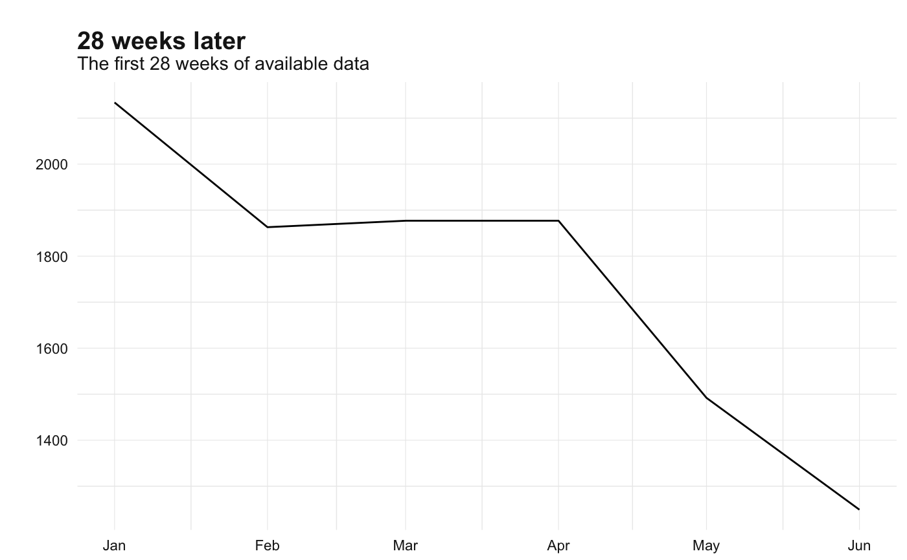

ts_span.RdFilter time series for a time span.
ts_span(x, start = NULL, end = NULL, template = NULL) ts_start(x) ts_end(x)
| x | ts-boxable time series, an object of class |
|---|---|
| start | start date, character string, |
| end | end date, character string, |
| template | ts-boxable time series, an object of class |
a ts-boxable time series, with the same class as the input.
All date and times, when entered as character strings, are processed by
anytime::anydate() or anytime::anytime(). Thus a wide range of inputs are
possible. See examples.
start and end can be specified relative to each other,
using one of "sec", "min", "hour", "day", "week",
"month", "quarter" or"year", or an abbreviation. If the series are of the same frequency, the
shift can be specified in periods. See examples.
# use 'anytime' shortcuts ts_span(mdeaths, start = "1979") # shortcut for 1979-01-01#> Jan Feb Mar Apr May Jun Jul Aug Sep Oct Nov Dec #> 1979 2263 1820 1846 1531 1215 1075 1056 975 940 1081 1294 1341ts_span(mdeaths, start = "1979-4") # shortcut for 1979-04-01#> Apr May Jun Jul Aug Sep Oct Nov Dec #> 1979 1531 1215 1075 1056 975 940 1081 1294 1341ts_span(mdeaths, start = "197904") # shortcut for 1979-04-01#> Apr May Jun Jul Aug Sep Oct Nov Dec #> 1979 1531 1215 1075 1056 975 940 1081 1294 1341# it's fine to use an to date outside of series span ts_span(mdeaths, end = "2001-01-01")#> Jan Feb Mar Apr May Jun Jul Aug Sep Oct Nov Dec #> 1974 2134 1863 1877 1877 1492 1249 1280 1131 1209 1492 1621 1846 #> 1975 2103 2137 2153 1833 1403 1288 1186 1133 1053 1347 1545 2066 #> 1976 2020 2750 2283 1479 1189 1160 1113 970 999 1208 1467 2059 #> 1977 2240 1634 1722 1801 1246 1162 1087 1013 959 1179 1229 1655 #> 1978 2019 2284 1942 1423 1340 1187 1098 1004 970 1140 1110 1812 #> 1979 2263 1820 1846 1531 1215 1075 1056 975 940 1081 1294 1341# use strings to set start or end relative to each other ts_span(mdeaths, start = "-7 month") # last 7 months#> Jun Jul Aug Sep Oct Nov Dec #> 1979 1075 1056 975 940 1081 1294 1341ts_span(mdeaths, start = -7) # last 7 periods#> Jun Jul Aug Sep Oct Nov Dec #> 1979 1075 1056 975 940 1081 1294 1341ts_span(mdeaths, start = -1) # last single value#> Dec #> 1979 1341ts_span(mdeaths, end = "1e4 hours") # first 10000 hours#> Jan Feb Mar Apr May Jun Jul Aug Sep Oct Nov Dec #> 1974 2134 1863 1877 1877 1492 1249 1280 1131 1209 1492 1621 1846 #> 1975 2103ts_plot( ts_span(mdeaths, start = "-3 years"), title = "Three years ago", subtitle = "The last three years of available data" )ts_ggplot( ts_span(mdeaths, end = "28 weeks"), title = "28 weeks later", subtitle = "The first 28 weeks of available data" ) + theme_tsbox() + scale_color_tsbox()# Limit span of 'discoveries' to the same span as 'AirPassengers' ts_span(discoveries, template = AirPassengers)#> Time Series: #> Start = 1949 #> End = 1959 #> Frequency = 1 #> [1] 3 2 1 4 1 1 1 0 0 2 0